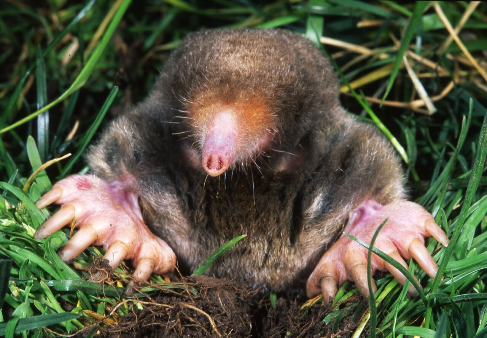

Krtek východoamerický (Scalopus aquaticus) je jeden z hojnějších amerických krtků.
Je černě, šedě nebo hnědě zbarvený, má lysý ocas a mimořádně široké přední tlapky.
Navzdory latinskému názvu a plovacím blánám mezi prsty zadních nohou není zvířetem vodním, naopak žádá suchou, lehkou, až písčitou půdu. Nory si hrabe těsně pod povrchem a krtiny vyhrnuje méně často než jiné druhy krtků.